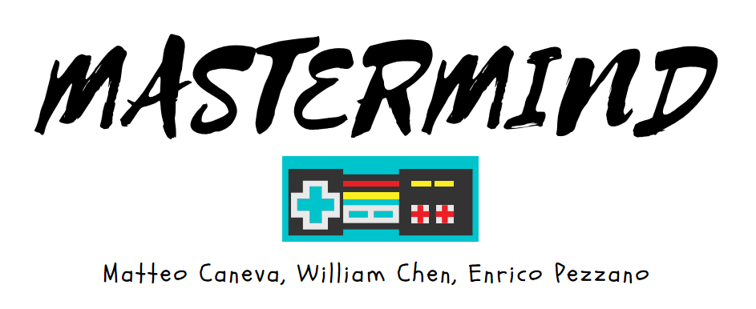

REGOLE
Lo scopo del gioco è indovinare la sequenza di colori generata dal computer.
E' possibile generare varie sequenze di colori schiacciando sulle caselle tonde poste al centro dello schermo.
Dopo aver generato la prima sequenza, per capire quali colori sono nella giusta posizione e quali no, è necessario consultare
la tabella con le  in basso a destra dello schermo le quali compariranno dopo l'invio del primo tentativo; essa identifica infatti il numero di colori nella posizione errata
in basso a destra dello schermo le quali compariranno dopo l'invio del primo tentativo; essa identifica infatti il numero di colori nella posizione errata
rispetto alla sequenza casuale creata dal computer
(15 tentativi, 4 caselle da indovinare)
Schiaccia Play per giocare
PLAY